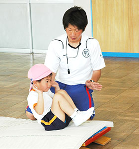

課外教室
サッカー・体操・新体操・習字
サッカークラブでは・・・
サッカーを通じルール・技術の向上はもとより体力向上・精神面の健康な発育・自主性・社会性・協調性等を養成しています。
| 場所 | 武蔵野幼稚園 園庭 | |
|---|---|---|
| 時間 | 年長組 | 毎週水曜日 14：10-15：10 |
| 年中組 | 毎週木曜日 14：10-15：10 | |
| 小学生 1・2・3年生 | 月・火・水・金 17：00-18：30 | |
| 小学校 4・5・6年生 | 木 17：00-19：00 土 10：00-12：00 |
|
※ 週１回又は２回 ご都合の良い曜日選択可能です。
※ 卒園児以外の方も参加可能です。
| 入会金 | 5,000円 |
|---|---|
| 年会費 | 2,000円 |
| 月会費 | 5,250円 |
| 講師 | 原 康倫 |
※ バスの送迎有
スポーツクラブでは・・・
幼児向きに運動の楽しさを工夫したカリキュラムに基いて年間指導を行っております。
易しいものから、無理なく・無駄なくマスターできるようになります。
その結果、敏捷性・柔軟性・筋力・バランス・持久力を身につけると同時に、
ルールや役割を体験し、協調性を高めるように指導を行っています。

| 場所 | 武蔵野幼稚園 園庭 | |
|---|---|---|
| 時間 | 年長組 | 毎週火曜日 14：10-15：10 |
| 年中組 | 毎週金曜日 14：10-15：10 | |
| 入会金 | 5,000円 | |
| 年会費 | 2,000円 | |
| 月会費 | 5,250円 | |
| 講師 | 原 康倫 | |
新体操では・・・
運動は苦手でも、それぞれに個性を持ち、内に秘めたものがあるはずです。
その個性・魅力を引き出すのが新体操なのです。
| 場所 | 武蔵野幼稚園 | |
|---|---|---|
| 時間 | 毎週月曜日 14:00-15:00 | |
| 対象 | 幼稚園年中・年長 | |
| 入会金 | 2,000円 | |
| 年会費 | 1,000円（保険加入料金として） | |
| 月会費 | 4,000円 | |
| 指導内容 | 手具（ボール・フープ・リボン・なわ）の持つ特性を生かし、基本的な動作・演技を構成する基本運動をひとつずつ、ていねいに指導いたします。 | |
| 講師 | 村上 尚美 | |
※１０月まで随時、１日無料体験可能です。（わからない事がありましたら、武蔵野幼稚園までご連絡下さい。）
書道では・・・
書道は幼児期から習うのが上達の早道です。心静かに、のびのびと美しい文字を見につけ“がんばる力”を養うよう指導しています。
| 場所 | 武蔵野幼稚園 | |
|---|---|---|
| 時間 | 毎週土曜日 13:00-16:00 | |
| 対象 | 幼児一般 | |
| 入会金 | 在園児・卒園児 無料 | |
| 月謝 | 幼児 2,000円 | |
| 小学生 3,000円 | ||
| 中学生・大人 2,000円 | ||
※半紙・すみ代は月謝に含まれています。